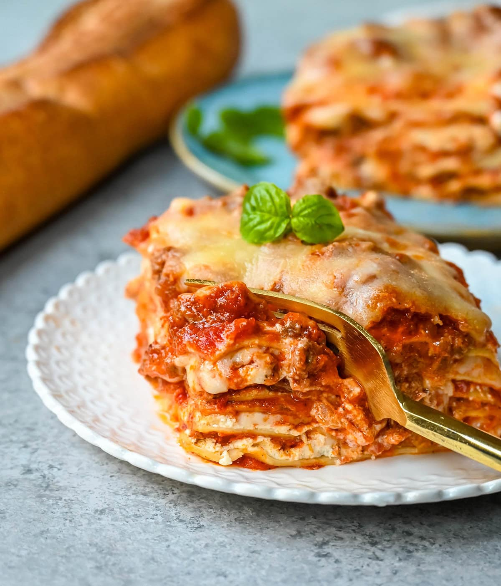

Lasagna
Back to Home

Lasagna is a classic Italian dish that is perfect for feeding a crowd.
This recipe serves 6-8 people.
Ingredients
- 1 pound ground beef
- 1 onion, chopped
- 2 cloves garlic, minced
Instructions
- Preheat oven to 375°F (190°C).
- In a large skillet, cook ground beef, onion, and garlic over medium heat until meat is no longer pink; drain.
- Stir in tomato sauce and seasonings. Simmer for 10 minutes.
- In a greased 9x13 inch baking dish, layer noodles, meat sauce, and cheese. Repeat layers.
- Cover with foil and bake for 25 minutes. Remove foil and bake for an additional 25 minutes or until cheese is melted and bubbly.
- Let stand for 10 minutes before serving.